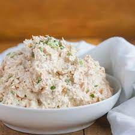

Tuna Salad

Description
An extremely easy and low effort tuna dish that can be made in less than 10 minutes
Ingredients
- Canned Tuna - preferably canned in water
- Mayonnaise
- Pepper
- Salt optional
Steps
- Open Canned Tuna and empty it into a bowl
- Add one teaspoon of pepper
- Add and mix mayonnaise in increments of 1/4th cup until you reach desired consistency
- Add pepper and salt to taste